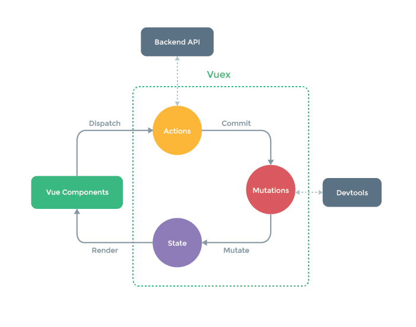

Bumblebee Update
ADSUG 2018
Tim Hostetler
Some stats from last year
- 30 Releases
- 517 Commits
- 110 Issues Closed
Parity with classic
- Author affiliation export tool
- Custom export formats
- Personalized user settings
- Tugboat support
Other Improvements
- Overall speed increases
- Reduce superfluous requests
- Better caching/storage usage
- Lazy loading highlights
- Better user feedback
- Loading bar
- Error messages
- Change in search style
- Better ORCiD integration
- Pagination updates
User Study Results
- Interesting point 1
- Interesting point 2
- Interesting point 3
Active Users
*Since Nov 2017New vs Returning
*Since Nov 2017In the works
- Library set operations
- MyADS dashboard
- Expanded configuration
Challenges
- Aging tech stack
- Difficult to maintain
- Only so fast, without major refactor
- Lack of front-end devs/specialists
Considerations
- Possible refactor (rewrite)
- Newer front-end frameworks/technologies
- How to transition properly
- Balance priorities
What a rewrite could fix
- Speed improvements (perceived & actual)
- Easier maintenance, less bugs
- Search engines and other non-js crawlers
- Better UX
Questions
...
Bumblebee is aging

Slow...


Load Time
Average application load time: 5.79s
Many unnecessary page renders/reflows

Lighthouse
Why?
- Based on older (+4 years) tech stack
- Hard to maintain
- Hard to integrate with user applications
- Bad mobile performance
Tech Stack
- BackboneJs & React
- Python backend (Flask)
Maintenance
- Separation of concerns (DRY)
- Complicated builds
- Too many dependencies (100+ 3rd party libs)
- Testing...
Integrations & SEO
- Zotero, Bookends, etc.
- Unfurl links
- Scrapers, non-js users
- Google, Bing, others
Unfurl Links


User Experience
- Not completely responsive
- Bad user feedback
- Confusing or hidden features
Mobile is bad...

Accessibility
- Facets not useable by screen readers
- Page regions can get readers into loops
- Some sections inaccessible
It Gets Better
Types of Web Applications
- Server-rendered (traditional)
- Client-rendered (SPA)
- Hybrid (universal)
Hybrid Approach
- Lives on both client and server
- SEO is easier
- Less load on server
Proposal
- New hybrid web app
- Uses new tech stack
- Updated UI framework
New Tech Stack
- Vue.js + Nuxt
- Node.js server (proxy to flask)
How will it be better?
- Better state management
- Easier maintenance
- SEO, non-js crawler support
- Responsive
- FASTER!
Speed Improvements
- Consistent load times < 1s
- Fewer page renders, utilizing virtual DOM
- Pre-rendering on server, hydrate on client
* tested on prototype (wip)
SEO, Non-js
- Metadata rendered server-side
- Non-js users possible
- Google, Bing, unfurl crawlers should just work
User Experience
- Consolidate and simplify interface
- Easier to implement user requested features
- Better mobile usability
- Prioritize based on user feedback
Easier Maintenance
- Support newer language features
- Better tooling
- Batteries included (fewer dependencies)
- Simplified builds
- Easier testing...
How We Get There
- 90% rewrite
- Visual components need to be refactored
- Continued Bumblebee maintenance
- Gradual work on new system
- Create MVP
Questions?
Vue internals
- MVVM pattern
- Action -> Model -> Diff -> Render
- Virtual DOM
Vue MVVM

Vue Databinding
Flux
- Technique for state management
- Reducers and single store
- Non-immutable data structures
- Pure functions

Reducers

Middleware

Component Communication

Connected Components

Vuex
- Vue's implementation of Flux
- Baked into the core framework
Vuex
Nuxt
- SSR skeleton/framework for Vue
- Provides scripts, hooks, middleware, etc.
- Based on Node.js server
- Selective rendering
- Bundling of client/server automatically